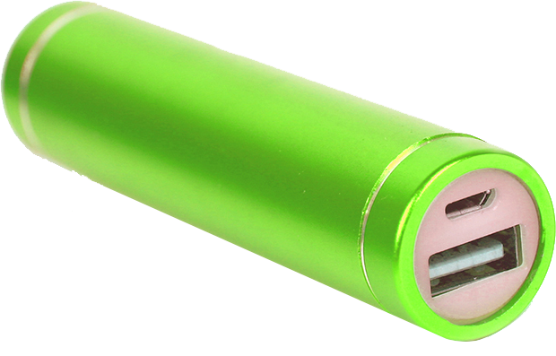
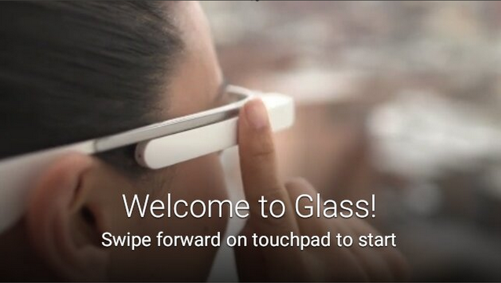
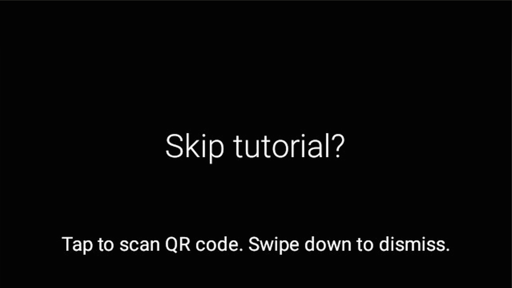

Glass in the Enterprise
Tips and Tricks
Created by Jenny Tong / mimming.com / @BaconatedGeek
Hi! I'm Jenny.
I'm a Developer Advocate at 
I like to help people cause trouble with code.
But, I'm not a member of the Google Glass team.
Where Glass fits
You are all unique snowflakes.
Photo by Dakota Lynch
Tips and tricks

Photo credit: pinguino on Flickr
Warning
Hacking ahead. Thar be dragons
Drawing credit brownpau on flickr
Power
Poking around
# list of built in and custom *.apk’s
$ adb shell ls /system/priv-app
# list of running framework services
$ adb shell dumpsys -l
# list of packages native libraries
$ adb shell ls /system/lib
Unlocking Glass
This disables your warranty
$ adb reboot bootloader
$ fastboot oem unlock
$ fastboot flash boot boot.img # Rooted boot image
$ fastboot flash system system.img # Your custom system image
Bypass Built in stuff
- Built in Glass features may not fit your enterprise
- Some of this stuff requires root, find your balance
Replace the launcher
- You don't need root
- Overriding the launcher intent
- Don't delete
GlassHome.apk - A good place to start is the AOSP launcher
# Remove this property inside AndroidManifest.xml
# <manifest android.sharedUserId=”android.uid.system”>
# Install it
$ adb install Launcher2.apk
Disable updates
- This is probably a bad idea. It disables security updates.
- You need root
$ adb shell rm system/priv-app/GlassUpdate.apk
Prevent Timeline Sync
- Requires
WRITE_SYNC_SETTINGSpermission - You don't need root
// Disable all sync adapters
ContentResolver.setMasterSyncAutomatically(false);
// Cancel any running sync
ContentResolver.cancelSync(null, null);
Run Glass without a user
You need root
# on a fresh Glass
$ adb shell rm system/priv-app/GlassSetup.apk
# after logging a user in
$ adb shell rm data/system/users/0/accounts.db
Strange things will happen (e.g. it breaks the camera button)
Skip the tutorial
Tap with 2 fingers, 7 times
 THE END
Questions?
Slides
https://mimming.com/presos/google-glass-in-the-enterprise
Slides' Code
https://github.com/mimming/google-glass-in-the-enterprise/
Created by Jenny Tong / mimming.com / @BaconatedGeek